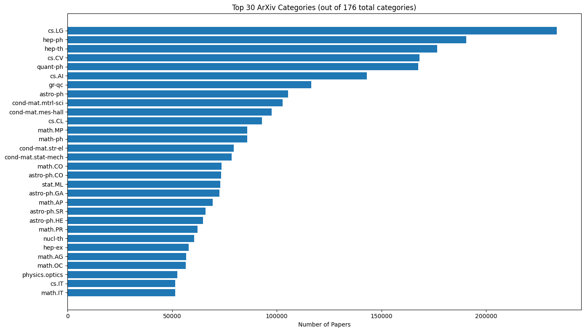
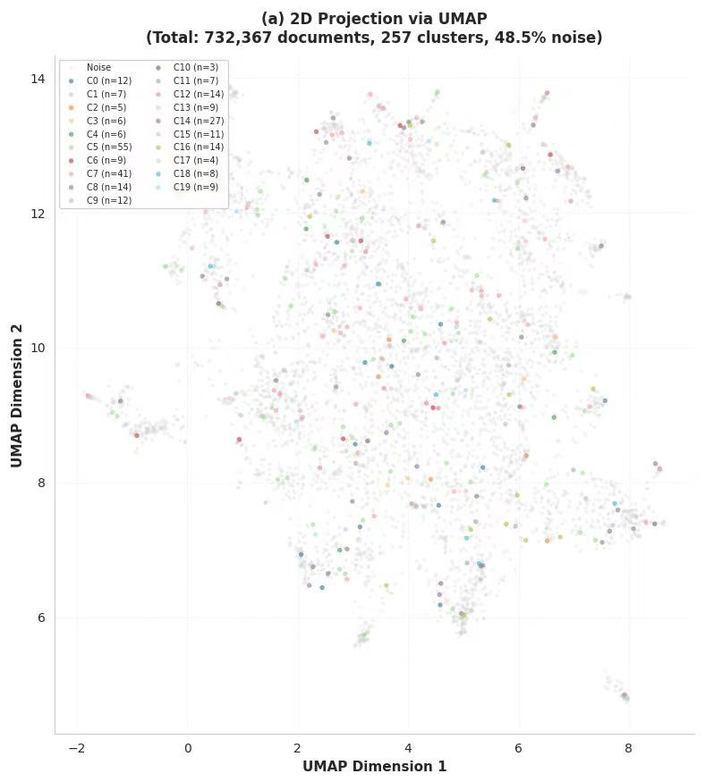

PaperTrail
PaperTrail is an intelligent literature exploration tool designed for academic researchers.
Based on the topics you care about, it quickly identifies the most relevant papers from over 700,000 recent computer science publications and maps out a clear, step-by-step reading path.
By combining multiple relevance signals, PaperTrail generates personalized paper recommendations to help you focus on what truly matters. Powered by state-of-the-art large language models, it also provides clear reading guidance for each paper, making your literature review faster, more accurate, and more directed.
Request a learning plan
Describe what you want to learn and how many papers to base the plan on.
Continuing means you agree to this process.
Learn more about our project
How PaperTrail works under the hood
Technical overview
PaperTrail is a research prototype that explores how to turn a large arXiv CS corpus into guided learning experiences. Instead of returning a long list of search results, the system tries to construct a small reading path that can be used as a starting syllabus.
All heavy computation happens in offline GitHub Actions pipelines, which makes the system easy to inspect and reproduce. The front-end stays simple and stable, while the retrieval models and ranking logic can evolve in the background.
Behind this setup, PaperTrail runs a fairly standard data-science pipeline: we clean and preprocess more than 700k arXiv papers, build TF-IDF features, and use LSA to get a compact semantic representation of the corpus. We also run topic discovery with K-Means and HDBSCAN so that related papers are grouped together in a meaningful way. For retrieval, we combine several methods—TF-IDF, LSA, LSH, and SBERT—and mix in simple metadata such as citations, recency, and paper type. After ranking the candidates with an MMR-based approach to avoid duplicates, we pass the final recommendation to an LLM, which turns them into a structured study plan, completing a reproducible end-to-end system that integrates large-scale data processing with AI-driven guidance.

PaperTrail is built on a large, real-world scientific corpus, containing roughly 2.84M papers. In total, we observe about 816k CS papers, 714k math papers, 136k statistics papers, and 112k EESS papers, with overlaps because a single paper can be tagged with multiple categories. Within CS, there are 40 subcategories; the biggest ones are cs.LG (≈234k papers), cs.CV (≈168k), cs.AI (≈143k), and cs.CL (≈93k),. This large-scale category analysis motivated us to focus PaperTrail on the computer science centric portion of the corpus, containing over 700,000 computer science papers from the arXiv dataset. From each paper, we extract key fields such as the title, abstract, authors, and categories, and then run a full preprocessing pipeline that includes lowercasing, symbol filtering, stopword removal, and Porter stemming.
After preprocessing, the text is converted into TF-IDF features with a vocabulary capped at 100,000 terms, covering both unigrams and bigrams. Extremely common or rare terms are filtered using max_df and min_df, and we also include a custom stopword list. The final output is a highly sparse CSR matrix (less than 1% density), which keeps memory usage low and makes later computations efficient. Because the original TF-IDF space is too high-dimensional and to capture semantic relationships beyond surface-level keyword matching, we apply Truncated SVD to perform LSA, reducing the vectors from around 100,000 dimensions to about 1,000. In this semantic space, relationships between papers reflect thematic similarity rather than just lexical overlap. All reduced vectors are L2-normalized to support fast similarity search. Topic keywords are also extracted through LSA’s back-projection mechanism, which lets us identify representative terms directly from the reduced space.
To support different kinds of user queries, we implemented a hybrid retrieval system. Traditional TF-IDF search works well for keyword-driven queries, using cosine similarity and precomputed norms to rank results quickly at scale. For more meaning-focused searches, LSA projects the query into the 1,000-dimensional semantic space before computing similarity, helping match papers that phrase the same idea differently. To keep latency low on a corpus this large, we also incorporate LSH acceleration, hashing papers into multiple buckets using random hyperplanes and running exact ranking only within narrowed candidate sets. All user queries go through the same cleaning pipeline as the training data to ensure consistency. In addition, clustering information is also integrated into search: each paper’s similarity to the 40 discovered research themes is computed with TF-IDF, allowing us to identify the most relevant topic for the query and filter out unrelated ones. This keeps the final result set focused and more useful for learning.
Beyond simple similarity, search results are grounded in the global research landscape. By mapping queries to adaptive semantic clusters discovered via HDBSCAN, the system filters out domain-irrelevant noise (e.g., distinguishing "Attention" in NLP from "Attention" in Psychology), ensuring recommendations remain pedagogically coherent.
Stage 1: Weak Supervision via Heuristic Labeling
To address the scarcity of manual relevance labels, we employ a heuristic weak supervision strategy. We define view-specific labeling functions (e.g., boosting “survey” terms for Review views) to generate pseudo-labels. These labels construct a set of preference pairs P, serving as a robust proxy for ground-truth relevance.
Stage 2: Pairwise Weight Optimization
We formulate feature weight learning as a convex optimization problem rather than a black-box neural network. We minimize the Regularized Pairwise Logistic Loss to align the weight vector w with our weak supervision signals.
We solve this using Non-negative Coordinate Ascent, ensuring interpretability and rapid convergence—iteratively updating weights to maximize the likelihood of ranking “better” documents higher.
Stage 3: Trust-Aware Scoring and MMR
The final relevance score integrates the learned weights with a source-based Trust Factor τ to penalize low-quality metadata.
To ensure diversity, we apply Maximum Marginal Relevance (MMR) re-ranking, which dynamically balances the learned relevance score against information novelty within the selected set.
In the final stage, the pipeline transforms raw papers into a Structured Learning Plan. We utilize a versioned System Prompt to strictly enforce a JSON Schema, ensuring the output contains executable modules like Reading Order, Actions, and Timeline rather than unstructured text. To guarantee reliability, the system performs double validation: it checks the JSON structure and programmatically verifies that no non-existent papers are hallucinated. Every execution is tagged with a unique Trace ID for full reproducibility. Token usage is optimized by truncating abstracts, and all artifacts are automatically archived by enabling integration with CI/CD workflows like GitHub Actions.